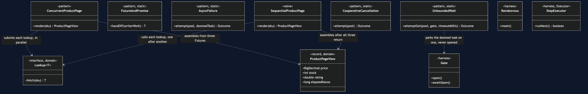
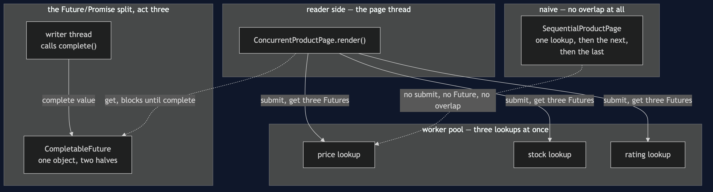
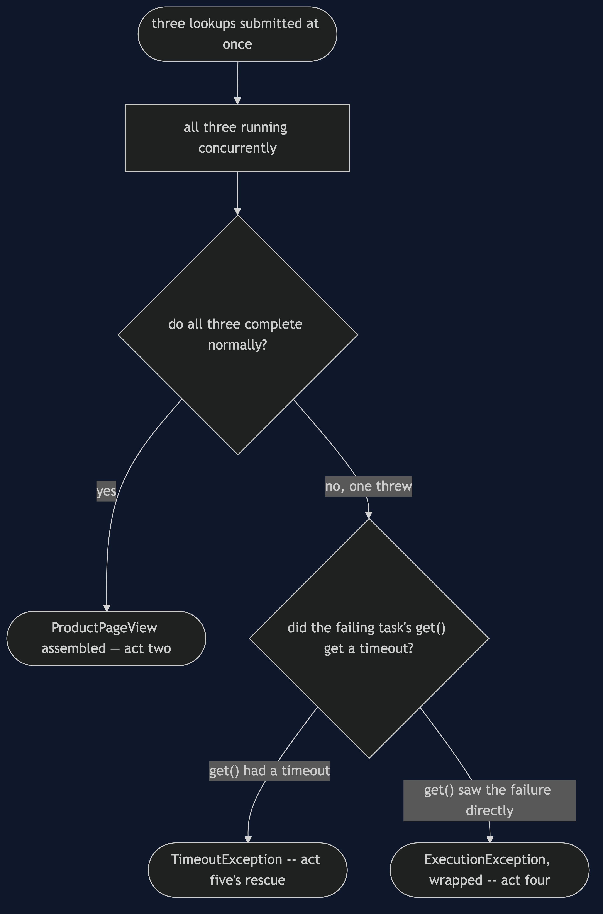
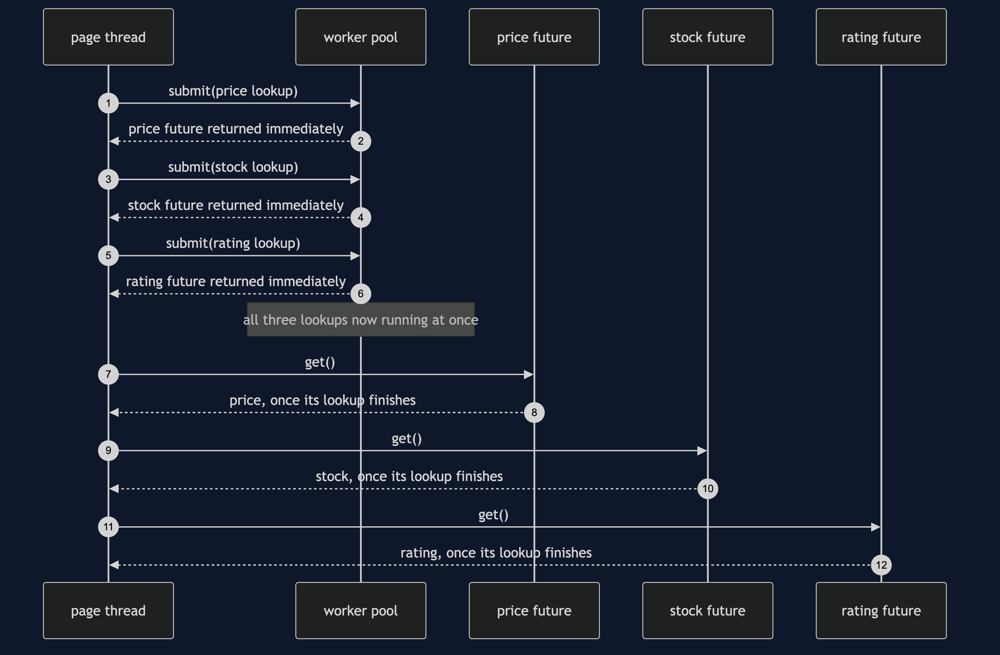
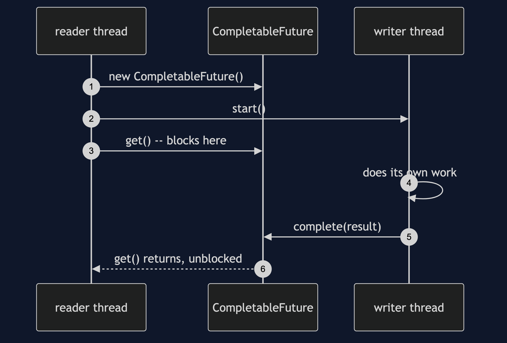
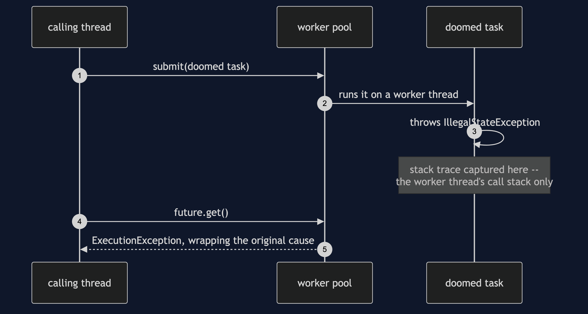
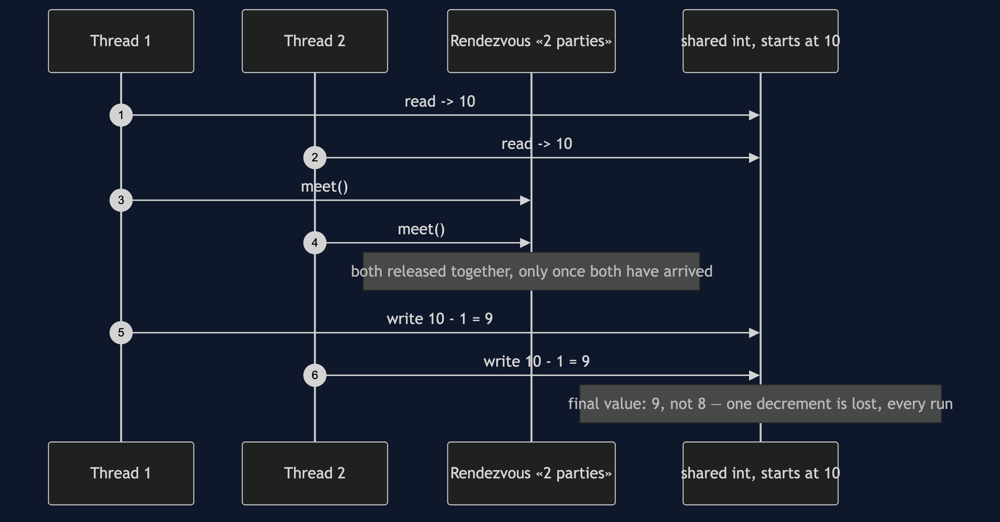

Future/Promise Pattern
src/main/java/com/jk/explore/futurepromise/
├── ProductPageDemo.java composition root — the six acts
│
├── domain/
│ ├── Lookup.java «functional interface» fetch(sku)
│ └── ProductPageView.java record(price, stock, rating, elapsedNanos)
├── harness/ ← reused unchanged from §46
│ ├── Gate.java
│ ├── Rendezvous.java
│ └── StepExecutor.java
├── naive/
│ └── SequentialProductPage.java three lookups, one after another
│
└── pattern/ ← the real thing
├── ConcurrentProductPage.java three lookups, submitted at once
├── FutureAndPromise.java the two halves, made explicit
├── AsyncFailure.java exceptions move
├── UnboundedWait.java get() with no timeout is a hang
└── CooperativeCancellation.java cancel() is a request, not a commandEach unit of work is submitted and immediately returns a handle to a result that does not exist yet, so independent work can run at once instead of one call waiting out the last before it even starts.
This is the third project in concurrency-design-patterns, reusing Producer–Consumer's harness directly, and answering a question the first two projects leave open: once work is handed to a queue or a pool, how does the caller ever find out what happened.
Run
./gradlew runSix acts.
Act one is three independent lookups, paid for one after another anyway.
ONE. Sequential — price, then stock, then rating.
price £129.99, stock 7, rating 4.6
rendered in 619ms — three lookups, none depending on the others,
paid for one after another anyway.Act two is the same three lookups, submitted at once.
TWO. Concurrent — all three submitted at once.
price £129.99, stock 7, rating 4.6
rendered in 208ms — roughly one lookup's cost, not three.Act three makes the Future/Promise split explicit, on two threads.
THREE. Future and Promise — the two halves, made explicit.
the writer thread completed the promise: £129.99
the reader thread was blocked on the future until it did.Act four shows exceptions moving — surfacing later, wrapped, on a stack trace that omits the calling thread entirely.
FOUR. Exceptions move — surfacing wrapped, on get().
cause: catalogue unavailable for ESP-001
stack top: com.jk.explore.futurepromise.ProductPageDemo.lambda$actFour$4(ProductPageDemo.java:107)
the call site that submitted this task appears nowhere above: trueAct five shows a get() with no timeout for what it actually is.
FIVE. get() with no timeout is a hang.
a task parked forever, waited on with a 200ms rescue timeout:
timed out: true, after 205ms
a bare get() with no timeout does not time out — it just never returns.Act six shows cancellation for what it actually is: a request.
SIX. Cancellation is cooperative, and may do nothing.
cancel(true) reported: true
the task ran to completion anyway: true
it caught every interrupt and carried on — cancel asked; the task said no.Test
./gradlew testEight test classes, 10 test methods between them, several run twenty times each via @RepeatedTest — 124 executions total, zero of them using Thread.sleep to wait for another thread. ConcurrentProductPageTest proves all three lookups are genuinely in flight at once, not merely submitted quickly; CooperativeCancellationTest proves cancellation is requested only after the task has actually started, so the test cannot accidentally prove the wrong thing by cancelling before the task even runs.
Technologies and versions
| What | Version | Why it is here |
|---|---|---|
| Java | 21 | The repository standard, via the Gradle toolchain block |
| Gradle | 9.2.1 | The wrapper in this directory; no separate install needed |
| JUnit 5 | 5.10.2 | Test runner — @RepeatedTest is how this project proves a race, not merely exercises it |
No frameworks beyond JUnit. java.util.concurrent is this category's entire subject, including CompletableFuture, Future and ExecutorService — the pattern classes wrap them directly.
Learning Material
| Document | What it covers |
|---|---|
docs/problem-statement.md | The three independent lookups, and what the pattern has to deliver |
docs/future-promise-pattern-explained.md | The two halves, and the three costs paid honestly |
docs/determinism.md | How each scenario is forced, and the two that need no forcing at all |
docs/class-diagram.md | The types, and which ones touch CompletableFuture directly |
docs/architecture-diagram.md | Where each piece runs, and the Future/Promise handoff |
docs/data-flow-diagram.md | One render, to an assembled view, a wrapped exception, or a rescued hang |
docs/sequence-diagram.md | Who calls whom, in order — written for a listener with the screen off |
docs/uml-diagram.md | Four sequences: concurrent lookups, the handoff, a moved exception, the harness's own proof |
docs/animation.html | The six acts in a browser |
docs/prerequisites.md | What you need to know, including what §46/§47 already covered |
docs/session.md | A one-hour taught session with exercises |
docs/spec.md | The generated specification, with measured test counts and timings |
docs/youtube.md | Title, description and chapters for the video |
The pattern in one picture
The single most important thing on this diagram: FutureAndPromise is the only class that touches a CompletableFuture directly — every other pattern class works through the plain Future an ExecutorService already returns.

Where each piece runs
Three lookups submitted at once, and the Future/Promise handoff kept deliberately separate from the pool — the split does not need an executor at all.

How one render moves
One render, to an assembled view — or to a wrapped exception, or to a rescued hang, both shapes of the same underlying fact: a task the caller could not simply wait out.

Who calls whom, in order
The sequence written to work with the screen off: the page thread submits all three lookups before asking any of them for a result, because asking early would not make any lookup start sooner.

All four sequences
The full set from docs/uml-diagram.md.
One. Three lookups, submitted at once, read in order.

Two. Future and Promise — one object, two threads. The reader blocks in get(); the writer, elsewhere, calls complete().

Three. An exception surfaces later, wrapped. The stack trace captured at the throw belongs entirely to the worker thread.

Four. The harness's own proof — a lost update, every run. The same mechanism §46 built, proven again before this project's own acts rely on it.

Video
The narrated walkthrough is built from video/scenes.py by video/build_video.sh. The rendered file is not committed — see the repository README for why.
When this is too much
Worth it the moment two or more units of work are genuinely independent and each takes real, measurable time — exactly this project's three catalogue lookups. Not worth it for two calls that are already fast, or for two calls where the second genuinely needs the first's result; a Future around work that was never going to run concurrently with anything is ceremony with no payoff behind it.
Where this sits
This is the third of six projects in concurrency-design-patterns, reusing §46's harness directly and assuming a reader has met either §46 or §47 already.
The next project, Read–Write Lock, moves from getting an answer back to protecting the shared state an answer is often read from: the category's stock count, this time under a read-heavy load.
Also available with a framework
Future/Promise with Spring Pattern reruns this idea on a real framework, and shows what the framework adds and where it can undo the pattern. Watch this project first.